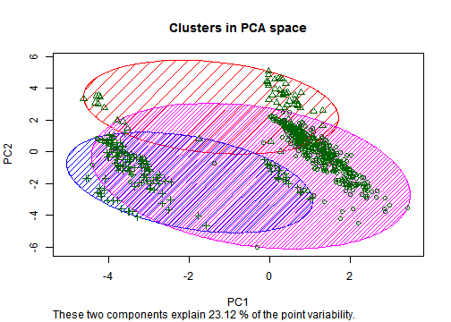

General note on data graphics in R
We demonstrate the typical workflow of an in-depth analysis
- Data cleaning
- Exploratory analysis
- Statistical methods
- Model evaluation & feature selection
Step-by-step demonstration
Live-Demo in R
Workflow of a typical data analysis
A live demo
Analysis goals
Analyze decisions on credit approvals
- From the free dataset repository of the University of California
(https://archive.ics.uci.edu/ml/datasets.html) - Data about credit card applications
- Contains a good mix of continuous and nominal attributes,
including a few missing values
- From the free dataset repository of the University of California
Analytical questions
- What are driving attributes behind approvals?
- Can we predict approvals?
- Are there clear rules?
Methods
Understanding the data via queries, aggregations and visualizations
See if there is a clustering of acceptance/denial events
Predicting the outcome of the credit card application via classification/regression
Model evaluation
Introduction
Basic concepts of data graphics in R
An overview of data graphics in R
- There are 3 main graphics systems in R
- built-in functionality (examples: plot(), hist(), etc.)
latticepackage (e.g. scatterplot matrices)ggplot2(implements 'The Grammar of Graphics' [Wilkinson, 2005])
Creating a data toy example (1/2)
Examplify different plotting options of R with a little toy dataset
- The following code generates our toy data
- We will skip the code for a moment to get the intuition from a few appropriate plots
- Data: Relationships between 3 price classes, product quality and customer satisfaction
# Create a scaling funtion that returns values between 0 and 100(%)
scale.fun <- function(vals) {return(abs( vals / max(vals) * 100 ))}
# Assume three different quality levels
quality.levels <- factor(c(1,2,3), labels=c("low", "mid", "hi"))
# Create a vector with 100 entries for each level
qualities <- rep(quality.levels, 100)
table(qualities)
## qualities
## low mid hi
## 100 100 100
Creating a data toy example (2/2)
# Model relationship between price & customer satisfaction for different quality levels
dat <- data.frame(satisfaction=NA, price=NA, quality=qualities)
dat$price[dat$quality=="low"] <- 50:149
dat$price[dat$quality=="mid"] <- 150:249
dat$price[dat$quality=="hi"] <- 250:349
dat$satisfaction[dat$quality=="low"] <- scale.fun(0.1 * 1:100 + rnorm(100))
dat$satisfaction[dat$quality=="mid"] <- scale.fun(0.75 * 1:100 + rnorm(100))
dat$satisfaction[dat$quality=="hi"] <- scale.fun(runif(100))
Example of a basic plot
# Create a histogram, suppress default label for x-axis
hist(dat$satisfaction, main="Distribution of people's satisfaction", xlab="")
# One can add things to the opened plot
title(xlab = "satisfaction level")
A simple lattice example
require(lattice)
# Create a scatterplot for each quality level
xyplot(satisfaction ~ price | quality, data = dat)
Note that we can see now differing correlations between the variables.
A simple ggplot2 example
require(ggplot2)
# Plot price vs. satisfaction in a colored scatterplot (Note: British spelling!)
ggplot(dat, aes(x=price, y=satisfaction, colour=quality)) + geom_point()
Other ggplot2 examples (1/2)
The concept of the grammar of graphs allows for easy adjustments of the visualization
# Now a boxplot of the data (with a slight change of the command)
ggplot(dat, aes(x=price, y=satisfaction, colour=quality)) + geom_boxplot()
Other ggplot2 examples (2/2)
E.g. overlaying of several plots. For more information please have a look at:
https://www.rstudio.com/wp-content/uploads/2015/03/ggplot2-cheatsheet.pdf
# Now a boxplot of the data (with a slight change of the command)
ggplot(dat, aes(x=price, y=satisfaction, colour=quality)) + geom_point() +
geom_density2d(alpha=0.3)
Note on ggplot2
- The grammar of graphics formalizes a mapping of data characteristics to graphics, including:
- geoms: Types of graphs
- aesthetics: Dimensions of the graphs ("x-axis", "y-axis", "color")
- and various other items
g <- ggplot(dat, aes(x=price, y=satisfaction, colour=quality)) + geom_point()
- The plus-sign is used to compose graphs
- There is also a convenience function
qplot - For furter information, have a look into the R Graphics Cookbook
Data Analysis - Part I
Data cleaning
Loading the data
# Read in the credit data from a CSV-file
raw.data <- read.csv("credit.csv", header=T, sep=",", stringsAsFactors=F)
The variable raw.data is of type data.frame.
# How many rows and columns? ("dimensions" of the data frame)
dim(raw.data)
## [1] 690 16
colnames(raw.data) # column names
## [1] "A1" "A2" "A3" "A4" "A5" "A6" "A7" "A8"
## [9] "A9" "A10" "A11" "A12" "A13" "A14" "A15" "Class"
An initial inspection of the data
# The str-function provides a quick overview
str(raw.data)
## 'data.frame': 690 obs. of 16 variables:
## $ A1 : chr "b" "a" "a" "b" ...
## $ A2 : num 30.8 58.7 24.5 27.8 20.2 ...
## $ A3 : num 0 4.46 0.5 1.54 5.62 ...
## $ A4 : chr "u" "u" "u" "u" ...
## $ A5 : chr "g" "g" "g" "g" ...
## $ A6 : chr "w" "q" "q" "w" ...
## $ A7 : chr "v" "h" "h" "v" ...
## $ A8 : num 1.25 3.04 1.5 3.75 1.71 ...
## $ A9 : chr "t" "t" "t" "t" ...
## $ A10 : chr "t" "t" "f" "t" ...
## [list output truncated]
Treatment of missing values (1/2)
dim(raw.data)
## [1] 690 16
# Check for missing values
any(is.na(raw.data))
## [1] TRUE
# Account for empty strings
raw.data[raw.data == ""] <- NA
Treatment of missing values (2/2)
# Drop rows with NaN values
na.raw.inds <- which(apply(is.na(raw.data), 1, any))
length(na.raw.inds)
## [1] 37
raw.data <- raw.data[-c(na.raw.inds),]
dim(raw.data)
## [1] 653 16
Inspecting a subset of the data
# Show a sample from the data
raw.data[c(1,5,8,353,601),]
## A1 A2 A3 A4 A5 A6 A7 A8 A9 A10 A11 A12 A13 A14 A15 Class
## 1 b 30.83 0.000 u g w v 1.25 t t 1 f g 202 0 +
## 5 b 20.17 5.625 u g w v 1.71 t f 0 f s 120 0 +
## 8 a 22.92 11.585 u g cc v 0.04 t f 0 f g 80 1349 +
## 370 b 21.42 0.750 y p r n 0.75 f f 0 t g 132 2 -
## 636 b 18.17 2.460 u g c n 0.96 f t 2 t g 160 587 -
Replacements of symbolic true/false values (1/2)
# We already know that the Class-column contains + and - signs
unique(raw.data$Class)
## [1] "+" "-"
# However, what else?
head(raw.data, n=1)
## A1 A2 A3 A4 A5 A6 A7 A8 A9 A10 A11 A12 A13 A14 A15 Class
## 1 b 30.83 0 u g w v 1.25 t t 1 f g 202 0 +
Replacements of symbolic true/false values (2/2)
# Replace +/- values with 1/0
raw.data[raw.data$Class == "+", "Class"] <- 1.0
raw.data[raw.data$Class == "-", "Class"] <- 0.0
Conveniently, none of the categorical attributes contains the strings 't' of 'f',
hence, we can easily substitute ...
# Replace t/f values with 1/0
raw.data[raw.data == "t"] <- 1.0
raw.data[raw.data == "f"] <- 0.0
Creating dummies for categorical variables (1/3)
Separate the sets of categorical and numerical variables
# (Already) numeric columns
to.keep <- c("Class", "A2", "A3", "A8", "A9", "A10", "A11","A12","A14","A15")
# Categorical columns
to.split <- c("A1", "A4", "A5", "A6", "A7", "A13")
# Separate numeric from categorical data
numeric.data <- raw.data[, to.keep]
dim(numeric.data)
## [1] 653 10
Creating dummies for categorical variables (2/3)
Introduce new columns with 0/1 values for categorical values
ext.raw.data <- raw.data[,to.keep] # create a copy of the data frame
for (j in to.split) { # for each categorical variable
fac <- as.factor(raw.data[,j]) # represent column as a factor
for (categ in levels(fac)) { # handle each category ('level')
tmp.vec <- fac == categ # creates vector of true/false values
tmp.vec <- as.numeric(tmp.vec) # true => 1 # false => 0
ext.raw.data <- cbind(ext.raw.data, tmp.vec) # append new column to data frame
colnames(ext.raw.data)[ncol(ext.raw.data)] <-
sprintf("%s(%s)", j, categ) # create useful column name
}
}
Creating dummies for categorical variables (3/3)
Compare the dimensions of the data frame before and afterwards
print(paste(dim(raw.data), dim(ext.raw.data), sep= " vs. "))
## [1] "653 vs. 653" "16 vs. 44"
Show example of new columns:
lc.ind <- ncol(ext.raw.data)
str(ext.raw.data[, (lc.ind -2):lc.ind])
## 'data.frame': 653 obs. of 3 variables:
## $ A13(g): num 1 1 1 1 0 1 1 1 1 1 ...
## $ A13(p): num 0 0 0 0 0 0 0 0 0 0 ...
## $ A13(s): num 0 0 0 0 1 0 0 0 0 0 ...
Export data to csv for inspection in an external editor
Export to csv:
write.table(ext.raw.data, "binarized_credit_data.csv", col.names = T,
row.names=F, quote=F, sep=",")
Reading it back in:
ext.raw.data <- read.csv(ext.raw.data, "binarized_credit_data.csv", header=T,
stringsAsFactors = F, sep=",")
Finally, we update the name of the data frame to stay consistent
data <- ext.raw.data
Data Analysis - Part II
Exploratory analysis
Count non-zero entries (1/2)
# Check if all columns are numeric
all(sapply(data, is.numeric))
## [1] FALSE
# Need to convert each column of the matrix
data <- as.data.frame(apply(data, 2, as.numeric))
all(sapply(data, is.numeric))
## [1] TRUE
Count non-zero entries (2/2)
table(data[,"Class"])
##
## 0 1
## 357 296
# Count the non-zero entries of each attribute for each class
agg <- aggregate(subset(data, select = -Class), by=list(Class = data[,"Class"]),
function(x) {length(x[x >0])})
agg[,c(1:10)]
## Class A2 A3 A8 A9 A10 A11 A12 A14 A15
## 1 0 357 349 311 71 84 84 157 309 190
## 2 1 296 291 282 278 203 203 145 216 188
Determining discriminative attributes (1/3)
We want to mark interesting attributes with high presence and strong discriminativity. This section also demonstrates the print()-function of R.
agg <- subset(agg, select=-Class)
ratios <- sapply(agg, function(x) {x[2] / x[1]})
nonzeros <- colSums(agg)
inds.decreasing <- order(nonzeros, decreasing=T)
# Prepare a print-out ...
print(sprintf("% -8s % -8s (% -s)", "Attribute", "Count", "Ratio"))
print("--------------------------")
Determining discriminative attributes (2/3)
# Do the print-out ...
for (i in inds.decreasing[1:15]) { # print out top 15 elements
count <- nonzeros[i]
ratio <- ratios[i]
if (count > 10) {
if (ratio > 2 || ratio < 0.5) {
print(sprintf("% -8s % -8s (%.2f) <-- discriminates the classes well)",
names(ratios)[i], count, ratio))
} else {
print(sprintf("% -8s % -8s (%.2f)", names(ratios)[i], count, ratio))
}
}
}
Determining discriminative attributes (3/3)
## [1] "Attribute Count (Ratio)"
## [1] "--------------------------"
## [1] "A2 653 (0.83)"
## [1] "A3 640 (0.83)"
## [1] "A13(g) 598 (0.88)"
## [1] "A8 593 (0.91)"
## [1] "A14 525 (0.70)"
## [1] "A4(u) 499 (1.00)"
## [1] "A5(g) 499 (1.00)"
## [1] "A1(b) 450 (0.81)"
## [1] "A7(v) 381 (0.75)"
## [1] "A15 378 (0.99)"
## [1] "A9 349 (3.92) <-- discriminates the classes well)"
## [1] "A12 302 (0.92)"
## [1] "A10 287 (2.42) <-- discriminates the classes well)"
## [1] "A11 287 (2.42) <-- discriminates the classes well)"
Selecting discriminative attributes by correlations
This is an alternative approach for determining single descriminative attributes. We rank attributes by their pairwise Pearson's correlations with the class labels.
# Compute Pearson's correlation between attributes and the class labels
test <- cor(subset(data, select=-Class), as.numeric(data[,"Class"]))
sort(test, decreasing = T)[1:10]
## [1] 0.7388289 0.4518657 0.4060516 0.3327282 0.2070860 0.1881173 0.1844048
## [8] 0.1802520 0.1727660 0.1652691
top5 <- rownames(test)[order(test, decreasing = T)][1:5]
top5
## [1] "A9" "A10" "A11" "A8" "A3"
Visualizing with a scatterplot matrix (1/4)
First, we need to select all non-binary columns from the data frame
selection <- which(apply(data, 2, function(x) {!(all(is.element(x, c(0,1))))}))
Option 1: Using the built-in functionality
# Builtin-function 'pairs'
pairs(data[,selection], main = "Scatterplots for credit attributes",
pch = 21, bg = c("red", "green3")[data$Class + 1])
# Note: See plot on next slide
Visualizing with a scatterplot matrix (2/4)
Visualizing with a scatterplot matrix (3/4)
Option 2: Using functionality from ggplot2
# To beautify the labeling of the plots, we should convert the class into a factor
data[,"Class"] <- factor(data[,"Class"], levels = c("0","1"),
labels=c("denial", "approval"))
multi_colored_kde <- function(data, mapping, ...){
ggplot(data = data, mapping=mapping) +
geom_density(mapping = aes_string(color="Class"), fill=NA)
}
ggpairs(data, columns=selection, title= "Scatterplot matrix",
mapping=ggplot2::aes_string(color="Class"),
upper="blank",
diag = list(continuous=multi_colored_kde),
lower = list(continuous=wrap("points", alpha=0.2)),
axisLabels= "none") # Note: See plot on next slide
Visualizing with a scatterplot matrix (4/4)

Heatmap visualization of pairwise correlations (1/3)
A heatmap is a colored matrix, where the color intensity of cells represents the strengths of pairwise relationships.
require(d3heatmap, quietly = T) # load one of the packages for heatmaps
# To compute pairwise correlations, attributes need to be numeric
tmp <- as.matrix(sapply(subset(data, select = -Class), as.numeric))
tmp <- cbind(tmp, as.integer(as.character(data$Class) == "approval"))
colnames(tmp)[ncol(tmp)] <- "Class"
# Compute a matrix of pairwise correlations
tmp.cor <- cor(tmp)
any(is.na(tmp.cor)) # columns with very low variance may introduce NAs
tmp.cor[is.na(tmp.cor)] <- 0
d3heatmap(abs(tmp.cor),color = "Reds",dendrogram = "none")
Heatmap visualization of pairwise correlations (2/3)
Heatmap visualization of pairwise correlations (3/3)
Hint: Working with re-usable code snippets
You can outsource codeblocks to make them re-usable
the comand source() reads in and executes an R-script
source('read_in_credit_data.R')
source('preprocess_credit_data.R')
source('scatter_plot_matrix.R')
Data Analysis - Part III
Statistical methods
Pre-filtering of attributes
Depending on the methods, some of the following steps are necessary (e.g. for principal component analysis)
# Separate the class from the rest of the data
classes <- data[,"Class"]
data <- subset(data, select=-Class)
# Remove columns with little variation
require(caret)
data <- data[,-c(nearZeroVar(data))]
# Center and scale columns (necessary for some ML-methods)
data.orig <- data
data <- scale(data)
Compute a PCA
pca <- prcomp(data)
pca4plot <- as.data.frame(pca$x)
pca4plot[,"Class"] <- classes
ggplot(pca4plot, aes(x=PC1, y=PC2, colour=Class)) + geom_point()
Scatterplot matrix of a PCA (1/2)
ggpairs(pca4plot, columns= c(1,2,3,4), color="Class", title= "Scatterplot matrix",
mapping=ggplot2::aes_string(color="Class"),
upper="blank",
diag = list(continuous=multi_colored_kde),
lower = list(continuous=wrap("points", alpha=0.2)),
axisLabels= "none")
# Note: See plot on next slide
Scatterplot matrix of a PCA (2/2)
Computing kmeans-clusters (1/4)
# Since k-means starts with a randomized initialization, we fix a random seed
# for reproducibility of the experiments
set.seed(10)
clustIDs <- kmeans(data, 2)$cluster
pca4plot[,"Cluster"] <- as.factor(clustIDs)
ggplot(pca4plot, aes(x=PC1, y=PC2, colour=Class, shape=Cluster))
+ geom_point(size=4, alpha=0.75)
clustIDs <- kmeans(data, 3)$cluster
pca4plot[,"Cluster"] <- as.factor(clustIDs)
ggplot(pca4plot, aes(x=PC1, y=PC2, colour=Class, shape=Cluster))
+ geom_point(size=4, alpha=0.75)
# Note: See plots on next slides
Computing kmeans-clusters (2/4)
Assuming 2 cluster centers
Computing kmeans-clusters (3/4)
Assuming 3 cluster centers
Computing kmeans-clusters (4/4)
Use another form of visualizing
library(cluster)
clusplot(data, clustIDs, color=TRUE, shade=TRUE, labels=0, lines=0,
main = "Clusters in PCA space", xlab="PC1", ylab="PC2")
Hierarchical clustering (1/2)
Learn a hierarchical cluster model
clusters <- hclust(dist(data), method='ward.D')
# "ward.D", "single", "complete", "average", ...
plot(clusters)
Hierarchical clustering (2/2)
Visualize the result for a comparison
clustIDs <- cutree(clusters, k=3)
clusplot(data, clustIDs, color=TRUE, shade=TRUE, labels=0, lines=0,
main = "Clusters in PCA space", xlab="PC1", ylab="PC2")

Learning a decision tree model (1/5)
# Make a split of the data into train and test set
set.seed(51)
train.sample <- sample(nrow(data), floor(0.75 * 653))
str(train.sample)
## int [1:489] 507 131 195 641 141 541 487 263 627 73 ...
d.train <- data.orig[train.sample,]
d.test <- data.orig[-train.sample,]
cl.train <- classes[train.sample]
cl.test <- classes[-train.sample]
Learning a decision tree model (2/5)
# Check statistical properties - are they comparable?
prop.table(table(classes))
## classes
## denial approval
## 0.5467075 0.4532925
prop.table(table(cl.train))
## cl.train
## denial approval
## 0.5337423 0.4662577
prop.table(table(cl.test))
## cl.test
## denial approval
## 0.5853659 0.4146341
Learning a decision tree model (3/5)
Building the model
require(C50)
credit.model <- C5.0(d.train, cl.train, control=C5.0Control(minCases=10))
summary(credit.model)
Plotting the decision tree model (4/5)
plot(credit.model)
Learning a decision tree model (5/5)
Use the model for predictions on the test set
cred.preds <- predict(credit.model, d.test)
# Make a confusion matrix for the predictions
library(gmodels)
CrossTable(cl.test, cred.preds, prop.chisq = FALSE, prop.c = FALSE,
prop.r =F, dnn = c("actual approval","predicted approval"))

Learning a linear model to classify the data (1/3)
Note that this abuses a thresholding a linear regression to classify data
tmp.train.df <- as.data.frame(d.train)
tmp.train.df$Class <- as.numeric(cl.train=="approval")
linear.model <- lm(Class ~ ., data=tmp.train.df)
# Inspect the model
summary(linear.model)
# Note: See output on the next slide
Learning a linear model to classify the data (2/3)
##
## Call:
## lm(formula = Class ~ ., data = tmp.train.df)
##
## Residuals:
## Min 1Q Median 3Q Max
## -0.89906 -0.09278 0.01710 0.16663 1.05325
##
## Coefficients: (4 not defined because of singularities)
## Estimate Std. Error t value Pr(>|t|)
## (Intercept) 1.024e+00 3.932e-01 2.605 0.00950 **
## A2 7.750e-04 1.471e-03 0.527 0.59857
## A3 -4.744e-03 3.267e-03 -1.452 0.14713
## A8 8.039e-03 5.679e-03 1.416 0.15753
## A9 6.000e-01 3.665e-02 16.369 < 2e-16 ***
## A10 1.020e-01 3.941e-02 2.587 0.00998 **
## A11 5.730e-03 3.720e-03 1.540 0.12417
## A12 -1.051e-02 3.054e-02 -0.344 0.73086
## A14 -2.977e-04 1.007e-04 -2.957 0.00327 **
## A15 1.282e-05 5.126e-06 2.502 0.01271 *
## `A1(a)` 3.968e-03 3.386e-02 0.117 0.90677
## `A1(b)` NA NA NA NA
## `A4(u)` -9.151e-01 3.881e-01 -2.358 0.01880 *
## `A4(y)` -9.884e-01 3.885e-01 -2.544 0.01128 *
## `A5(g)` NA NA NA NA
## `A5(p)` NA NA NA NA
## `A6(aa)` -5.585e-02 7.954e-02 -0.702 0.48293
## `A6(c)` 1.901e-02 6.663e-02 0.285 0.77555
## `A6(cc)` 6.614e-02 8.229e-02 0.804 0.42198
## `A6(ff)` -1.098e-01 2.005e-01 -0.548 0.58426
## `A6(i)` -2.014e-02 8.540e-02 -0.236 0.81370
## `A6(k)` -2.487e-03 7.839e-02 -0.032 0.97471
## `A6(m)` -3.340e-02 8.921e-02 -0.374 0.70826
## `A6(q)` -1.358e-02 7.383e-02 -0.184 0.85411
## `A6(w)` 5.517e-02 7.628e-02 0.723 0.46983
## `A6(x)` 1.602e-01 8.671e-02 1.848 0.06528 .
## `A7(bb)` -7.705e-02 1.054e-01 -0.731 0.46514
## `A7(ff)` -8.705e-02 2.042e-01 -0.426 0.67005
## `A7(h)` 2.260e-02 8.986e-02 0.252 0.80151
## `A7(v)` -2.794e-02 8.518e-02 -0.328 0.74300
## `A13(g)` 4.201e-02 6.030e-02 0.697 0.48638
## `A13(s)` NA NA NA NA
## ---
## Signif. codes: 0 '***' 0.001 '**' 0.01 '*' 0.05 '.' 0.1 ' ' 1
##
## Residual standard error: 0.3204 on 461 degrees of freedom
## Multiple R-squared: 0.6111, Adjusted R-squared: 0.5883
## F-statistic: 26.83 on 27 and 461 DF, p-value: < 2.2e-16
Learning a linear model to classify the data (3/3)
# Make predictions on new data points
linear.preds <- as.numeric(predict(linear.model, d.test) > 0.5)
# Inspect the results
CrossTable(cl.test, linear.preds, prop.chisq = FALSE, prop.c = FALSE,
prop.r =F, dnn = c("actual approval","predicted approval"))
Learning with a SVM (1/3)
library(kernlab)
dat.train.df <- as.data.frame(d.train)
dat.train.df$Class <- cl.train
svm.classifier <- ksvm(Class ~ ., data=dat.train.df, kernel = "vanilladot")
Learning with a SVM (2/3)
svm.classifier
## Support Vector Machine object of class "ksvm"
##
## SV type: C-svc (classification)
## parameter : cost C = 1
##
## Linear (vanilla) kernel function.
##
## Number of Support Vectors : 207
##
## Objective Function Value : -131.0236
## Training error : 0.132924
Learning with a SVM (3/3)
Use the model for predictions on the test set
svm.preds <- predict(svm.classifier, d.test)
CrossTable(cl.test, svm.preds, prop.chisq = FALSE, prop.c = FALSE,
prop.r =F, dnn = c("actual approval","predicted approval"))
Definitions of performance measures
# Recall
recall <- function(preds, targets) {
sum(preds & targets) / sum(targets) # TP / (TP + FN)
}
# Precision
precision <- function(preds, targets) {
sum(preds & targets) / sum(preds) # TP / (TP + FP)
}
# Accuracy
accuracy <- function(preds, targets) {
sum(preds == targets) / length(targets) # (TP + TN) / (TP + TN + FP + FN)
}
# R-Squared
r_squared <- function(preds, targets) {
cor(preds, targets)^2 # R-Squared is equal to the squared Pearson's correlation
}
Doing k-fold cross-validation for a SVM (1/3)
require(kernlab, quietly=T)
tmp.train.df <- as.data.frame(d.train)
tmp.train.df$Class <- cl.train
set.seed(15)
# Assign a random number k in c(1:10) to each data frame row
folds <- sample(rep(1:10, length=nrow(tmp.train.df)))
table(folds)
## folds
## 1 2 3 4 5 6 7 8 9 10
## 49 49 49 49 49 49 49 49 49 48
cv.recalls <- rep(NA, 10)
cv.precisions <- rep(NA, 10)
cv.accuracies <- rep(NA, 10)
Doing k-fold cross-validation for a SVM (2/3)
for (k in 1:10) {
# Fit model on all data samples except those having number k assigned
fold_k.fit <- ksvm(Class ~ ., data=tmp.train.df[folds!=k,], kernel = "vanilladot")
# Use model to predict labels for all data samples having number k assigned
fold_k.preds <- predict(fold_k.fit, subset(tmp.train.df[folds==k,], select=-Class))
cv.recalls[k] <- recall(fold_k.preds=="approval", cl.train[folds==k]=="approval")
cv.precisions[k] <- precision(fold_k.preds=="approval", cl.train[folds==k]=="approval")
cv.accuracies[k] <- accuracy(fold_k.preds=="approval", cl.train[folds==k]=="approval")
}
summary(cv.accuracies)
## Min. 1st Qu. Median Mean 3rd Qu. Max.
## 0.7347 0.8571 0.8673 0.8568 0.8776 0.9184
Doing k-fold cross-validation for a SVM (3/3)
Let's also plot the results of the individual folds.
plot(cv.recalls * 100, pch=19, type="b", ylim=c(0,100), main = "Performance measures", xlab="fold", ylab = "%")
points(cv.precisions * 100, pch=19, type="b", col="blue")
points(cv.accuracies * 100, pch=19, type="b", col="red")
legend("bottomright", c("Recall", "Precision", "Accuracy"), col=c("black", "blue", "red"), lty=1)
Feature selection with a regression model (1/3)
require(leaps)
# Prepare data frame
tmp.train.df <- as.data.frame(d.train)
tmp.train.df$Class <- as.numeric(cl.train=="approval")
# We can specify the linear model as a string
formel <- "Class ~ ."
# Apply forward selection on the attributes
subsets.fit <- regsubsets(as.formula(formel), data=tmp.train.df, method="forward")
## Reordering variables and trying again:
Feature selection with a regression model (2/3)
fit.summary <- summary(subsets.fit)
# Note: "Mallow's Cp is a measure for a model's performance, taking into account its complexity"
plot(subsets.fit, scale="Cp")
Feature selection with a regression model (3/3)
# Make a plot of model complexity' vs. Mallow's Cp
# Note: The lower, the better
plot(fit.summary$cp, type="b", main="Mallow's CP", xlab="#Features", ylab="Mallow's Cp", xlim=c(1,(ncol(tmp.train.df)-1)))
Summary
- Addressed the core parts of data analysis
- Data preparation
- Data modelling
- Data visualization
- Model evaluation
- Remember:
- Data analysis is an iterative process (CRISP)
- Each step will give you insights for the next one